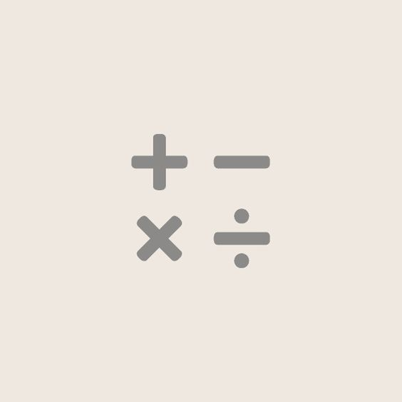

بنية الشبكة

بنية الشبكة
تُعد بنية الشبكة مجموعة أوسع من العناصر الأساسية التي تعمل بتناغم لتشغيل شبكة تقنية المعلومات وتعتبر جزءًا حيويًا من بنية تقنية معلومات المؤسسة. نظرًا لأن المؤسسة تعتمد على شبكتها التقنية لتشغيل التطبيقات الحيوية وعمليات الأعمال، فإن ضمان أن بنية الشبكة الأساسية موثوقة وآمنة وقوية وقادرة على التوسع يعد أمرًا حيويًا.
ماذا تتألف بنية الشبكة من؟
يمكن أن تكون بنية الشبكة مزيجًا من الأجهزة وتطبيقات البرمجيات وخدمات الشبكة، بما في ذلك:
تتضمن بنية الأجهزة عادةً موجهات، ومفاتيح، ومحابس، ومكررات، وبوابات، وجسور، ومودمات.
تشمل بنية البرمجيات أدوات الرصد والإدارة وأنظمة التشغيل.
تشمل خدمات الشبكة بروتوكولات الشبكة مثل TCP و UDP وتوجيه عناوين IP.
يمكن للمؤسسة توسيع شبكتها التقنية عن طريق التكامل مع خدمات الطرف الثالث من مقدمي خدمات الإدارة أو بناء بنية شبكية هجينة عن طريق دمج البنية الأساسية في المواقع مع خدمات السحابة. بنية الشبكة
تُعد بنية الشبكة مجموعة أوسع من العناصر الأساسية التي تعمل بتناغم لتشغيل شبكة تقنية المعلومات وتعتبر جزءًا حيويًا من بنية تقنية معلومات المؤسسة. نظرًا لأن المؤسسة تعتمد على شبكتها التقنية لتشغيل التطبيقات الحيوية وعمليات الأعمال، فإن ضمان أن بنية الشبكة الأساسية موثوقة وآمنة وقوية وقادرة على التوسع يعد أمرًا حيويًا.
ماذا تتألف بنية الشبكة من؟
يمكن أن تكون بنية الشبكة مزيجًا من الأجهزة وتطبيقات البرمجيات وخدمات الشبكة، بما في ذلك:
تتضمن بنية الأجهزة عادةً موجهات، ومفاتيح، ومحابس، ومكررات، وبوابات، وجسور، ومودمات.
تشمل بنية البرمجيات أدوات الرصد والإدارة وأنظمة التشغيل.
تشمل خدمات الشبكة بروتوكولات الشبكة مثل TCP و UDP وتوجيه عناوين IP.
يمكن للمؤسسة توسيع شبكتها التقنية عن طريق التكامل مع خدمات الطرف الثالث من مقدمي خدمات الإدارة أو بناء بنية شبكية هجينة عن طريق دمج البنية الأساسية في المواقع مع خدمات السحابة. بنية الشبكة
تاريخ الويب

تيم بيرنرز لي، عالِم بريطاني، اخترع الشبكة العنكبوتية العالمية (WWW) في عام 1989 أثناء عمله في مركز البحوث النووية الأوروبي (CERN). تم تصميم الويب أصلاً لتلبية الطلب على مشاركة المعلومات بشكل آلي بين العلماء في الجامعات والمعاهد في جميع أنحاء العالم. CERN ليس مختبرًا معزولًا، بل هو نقطة تواصل لمجتمع واسع يضم أكثر من 17,000 عالم من أكثر من 100 دولة. على الرغم من أن العلماء يقضون بعض الوقت على موقع CERN، إلا أنهم عادةً ما يعملون في الجامعات والمختبرات الوطنية في بلدانهم. لذا فإن أدوات الاتصال الموثوقة ضرورية. الفكرة الأساسية للويب كانت دمج تقنيات تطور الحواسيب وشبكات البيانات والنصوص الفائقة إلى نظام معلومات عالمي قوي وسهل الاستخدام. كتب تيم بيرنرز لي الاقتراح الأول للويب في مارس 1989 والاقتراح الثاني في مايو 1990. جمع هذا مع مهندس الأنظمة البلجيكي روبرت كايو، وكان ذلك اقتراحًا إداريًا في نوفمبر 1990. حدد هذا المستند المفاهيم الرئيسية وقام بتحديد مصطلحات هامة وراء الويب. وصف المستند "مشروع نصوص فائقة" يُدعى "وورلد وايد ويب" حيث يمكن عرض "شبكة" من "مستندات نصوص فائقة" بواسطة المتصفحين. بحلول نهاية عام 1990، كان تيم بيرنرز لي قد أطلق أول خادم ومتصفح ويب في CERN، مُظهرًا أفكاره. قام بتطوير رمز الخادم الخاص به على حاسوب NeXT. لتجنب إيقاف تشغيله عن طريق الخطأ، كان هناك تسمية مكتوبة يدويًا بالحبر الأحمر على الحاسوب: "هذه الآلة هي خادم. لا تطفئها!!" تاريخ الويب
إحصائيات الإنترنت - الشرق الأوسط ولبنان

استخدام الإنترنت في لبنان في عام 2022 كان هناك 6.01 مليون مستخدم للإنترنت في لبنان في يناير 2022. بلغ معدل انتشار الإنترنت في لبنان 89.3 في المئة من إجمالي السكان في بداية عام 2022. ملحوظة: نظرًا للتعديلات الكبيرة في البيانات الأساسية، نأسف لعدم قدرتنا حاليًا على تقديم أرقام حول تغيير مستخدمي الإنترنت على مر الوقت في لبنان. من الناحية التاريخية، تكشف هذه الأرقام عن عدم استخدام 716.9 ألف شخص في لبنان للإنترنت في بداية عام 2022، مما يعني أن 10.7 في المئة من السكان ظلوا بدون اتصال على الإنترنت في بداية العام. ومع ذلك، تستمر قضايا تتعلق بجائحة COVID-19 في التأثير على أبحاث اعتماد الإنترنت، لذا قد تكون الأرقام الفعلية لمستخدمي الإنترنت أعلى مما توحي به هذه الأرقام المنشورة (انظر هنا لمزيد من التفاصيل). بالنسبة لأحدث الرؤى حول اعتماد الإنترنت واستخدامه حول العالم، يُرجى متابعة تقاريرنا الدورية لإحصائيات العالم. سرعات اتصال الإنترنت في لبنان في عام 2022 تشير البيانات المنشورة من قبل Ookla إلى أن مستخدمي الإنترنت في لبنان كانوا يتوقعون سرعات اتصال بالإنترنت التالية في بداية عام 2022: سرعة اتصال الإنترنت المتنقلة الوسيطة عبر شبكات الهاتف المحمول: 21.30 ميجابت في الثانية. سرعة اتصال الإنترنت الثابتة المتوسطة: 7.67 ميجابت في الثانية. تُظهر بيانات Ookla أن سرعة اتصال الإنترنت المتنقلة الوسيطة في لبنان انخفضت بمقدار 9.38 ميجابت في الثانية (-30.6 في المئة) خلال الاثني عشر شهرًا حتى بداية عام 2022. وفي الوقت نفسه، تظهر بيانات Ookla أن سرعات اتصال الإنترنت الثابتة في لبنان زادت بمقدار 2.78 ميجابت في الثانية (+56.9 في المئة) خلال نفس الفترة. إحصائيات وسائل التواصل الاجتماعي للبنان في عام 2022 كان هناك 5.06 مليون مستخدم لوسائل التواصل الاجتماعي في لبنان في يناير 2022. كان عدد مستخدمي وسائل التواصل الاجتماعي في لبنان في بداية عام 2022 يعادل 75.2 في المئة من إجمالي السكان، ولكن من المهم أن نلاحظ أن مستخدمي وسائل التواصل الاجتماعي قد لا يمثلون أفرادًا فريدين (انظر ملاحظاتنا المفصلة حول البيانات لمعرفة السبب). تكشف تحليل Kepios أن مستخدمي وسائل التواصل الاجتماعي في لبنان زادوا بمقدار 690 ألف شخص (+15.8 في المئة) بين عامي 2021 و 2022. إحصائيات الإنترنت - الشرق الأوسط ولبنان